Final Project — Data Analysis and Visualization
May 2026
This project delivers an end-to-end business-analytics solution on top of the Amazon Sale Report dataset — a real transactional dump from Amazon India covering April–June 2022. The work spans four layers:
The business question the dashboard is built to answer is:
Which products, regions, and channels are driving Amazon India revenue — and where is the business losing money to cancellations?
| Property | Value |
|---|---|
| Source file | data/Amazon Sale Report.csv |
| Raw shape | 128,975 rows × 24 columns |
| Cleaned shape | 128,936 rows × 30 columns |
| Date range | 2022-03-31 → 2022-06-29 (91 days) |
| Geography | All 28 Indian states + 8 UTs |
| Categories | 9 (Set, Kurta, Western Dress, Top, Ethnic Dress, Bottom, …) |
| Currency | INR (₹) — only currency in raw data after filter |
Key columns used downstream: order_id,
date, status, category,
size, qty, amount,
ship_city, ship_state,
fulfilment, b2b, promotion_ids,
courier_status.
The pipeline is structured as three Jupyter notebooks plus a Streamlit app:
data/Amazon Sale Report.csv
│
▼
[01_data_cleaning.ipynb] ──► data/Amazon Sale Report Cleaned.csv
│
▼
[02_eda_statistics.ipynb] ──► report/figures/*.png (used in this report)
│
▼
[03_forecasting.ipynb] ──► data/forecast.csv (used by the dashboard)
│
▼
[Streamlit app: app.py + pages/]
├── Overview
├── Sales Analytics
├── Geographic
├── Forecasting (reads forecast.csv)
└── AI Insights (Claude API + templated fallback)Tooling. Python 3.14 · pandas · numpy · seaborn · matplotlib · plotly · scikit-learn · statsmodels · scipy · Streamlit · Anthropic SDK.
Every cleaning decision is justified below. The full code is in
notebooks/01_data_cleaning.ipynb.
| Issue | Detection | Action | Why |
|---|---|---|---|
24th column Unnamed: 22 was an empty trailing-delimiter
artifact |
NA count = 49,050 / 128,975 | Dropped | No information content |
Column names had inconsistent casing and a trailing space
(Sales Channel ) |
Visual inspection | Normalised to snake_case |
Robust downstream code |
amount had 7,795 NAs (6.0%) |
isna().sum() audit |
Imputed median by (category, size) → category → global
median |
Preserves rows; median robust to skew; orders cancel often without amount |
courier_status had 6,872 NAs |
isna().sum() audit |
Filled with 'Unknown' |
NA = courier hasn't picked up — meaningful state |
promotion_ids had 49,153 NAs and long composite
strings |
Inspection | Binarised → has_promotion, dropped raw column |
Long IDs not analytically useful |
fulfilled_by had 89,698 NAs |
Inspection | Filled 'Other' (NAs corresponded to Amazon-fulfilled
rows) |
Captures the implicit category |
| 33 rows had no ship-location at all | dropna(how='all', subset=ship_*) |
Dropped | Un-locatable; <0.03% of data |
| City names had duplicates (BENGALURU/BANGALORE, MUMBAI/BOMBAY, …) | value_counts() review |
Unified via a hand-curated dictionary | Otherwise geographic aggregates double-count |
6 exact duplicates on (order_id, sku, qty, amount) |
duplicated() |
Dropped | Avoid double-counting revenue |
Outliers on amount (1.3%) and qty
(3.0%) |
IQR fence at Q3 + 3·IQR | Flagged in is_amount_outlier,
not dropped |
High-value orders are real; dashboard offers an opt-in filter |
date was string MM-DD-YY |
dtype was object |
Parsed with explicit format | Time-based grouping requires datetime |
Final validation. After cleaning,
amount and date have zero NAs;
revenue is non-negative; 30 columns including six
engineered features (order_year/month/weekday/day,
is_cancelled, is_delivered,
has_promotion, is_amount_outlier,
is_qty_outlier, revenue).
| Metric | Value |
|---|---|
| Total revenue (shipped orders) | ₹71,794,993 (₹7.18 Cr) |
| Unique orders | 120,350 |
| Cancellation rate | 14.21 % |
| Avg order value (shipped) | ₹649 |
| Top category by revenue | Set |
| Top state by revenue | MAHARASHTRA |
| Unique cities reached | 7,289 |
The amount distribution is strongly right-skewed; a log
transform recovers a clean unimodal shape, confirming standard
e-commerce behaviour — many small orders, a long tail of high-value
ones.
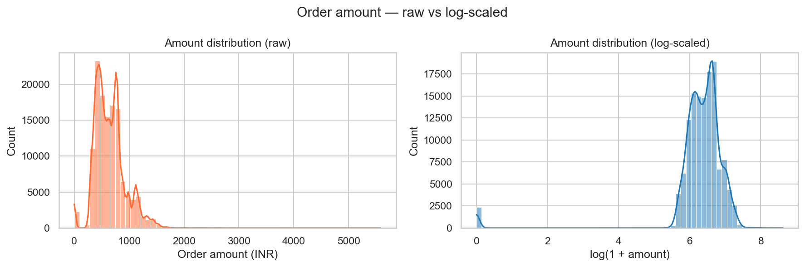
Per-category boxplots show Set and Western Dress sustain higher medians than the bulk-volume categories (Kurta, Top).
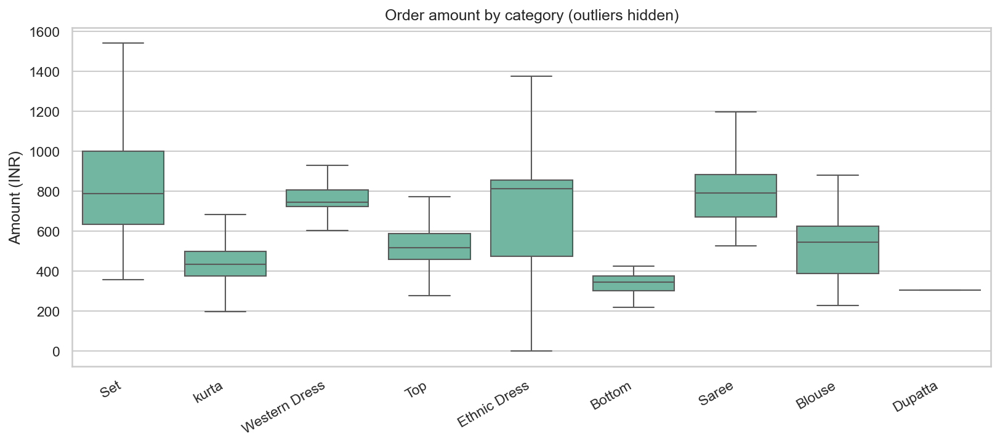
Daily revenue with a 7-day moving average highlights a sustained dip after the mid-May peak. Monthly aggregation reveals a -10.7 % MoM decline in the latest full month — a signal the dashboard flags automatically.
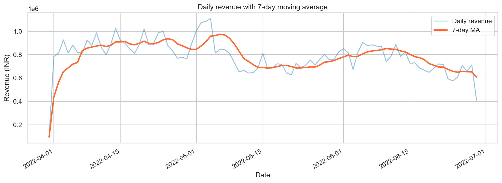
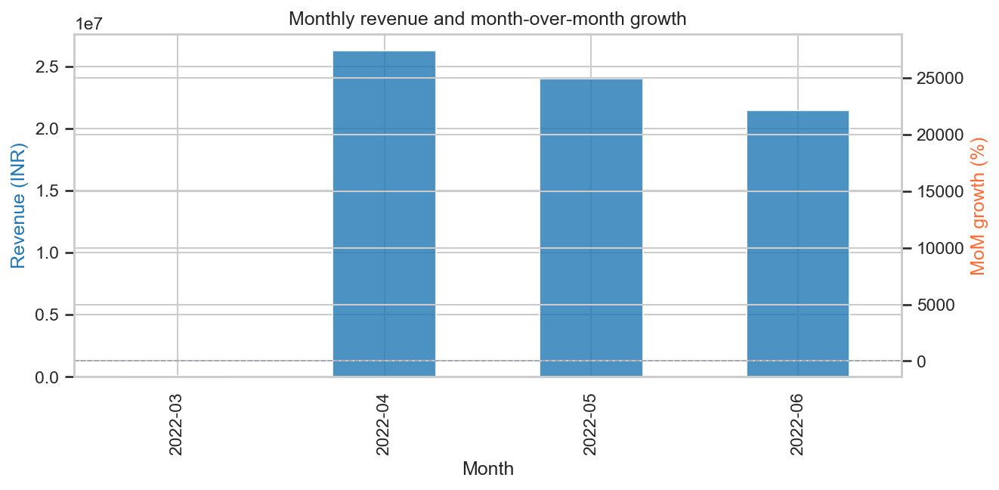
The top three categories — Set, Kurta, Western Dress — together account for the bulk of revenue. Cancellation rates vary noticeably by category, with some niche lines hitting >18 % cancels.
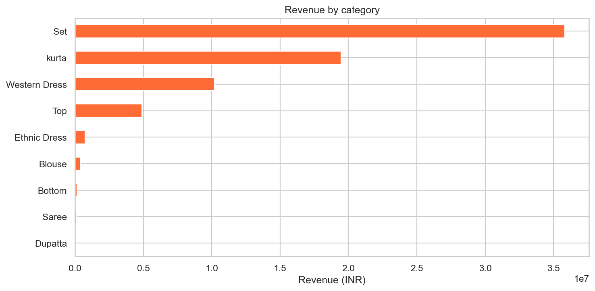
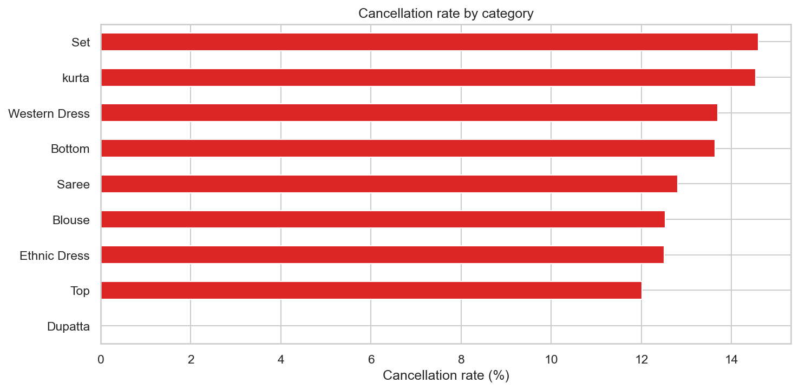
Geographically, Maharashtra, Karnataka, and Tamil Nadu dominate. The top 15 states together explain most of the revenue base.
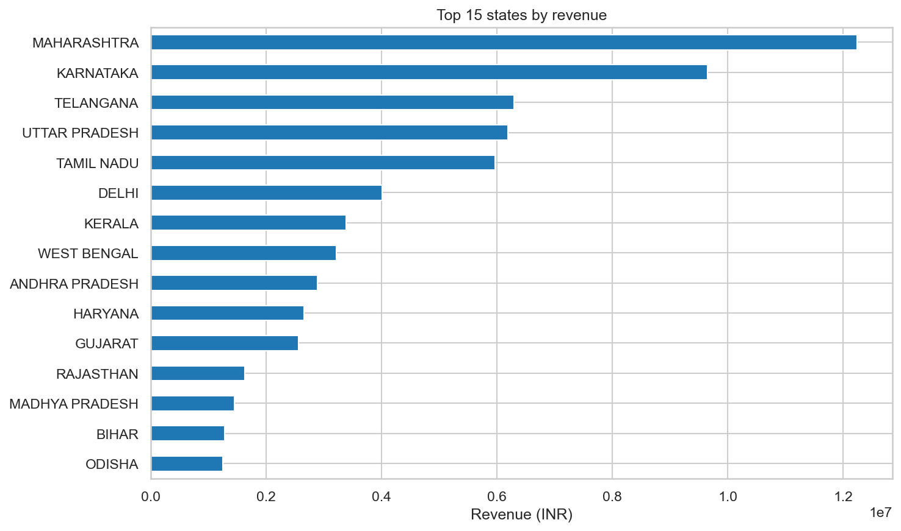
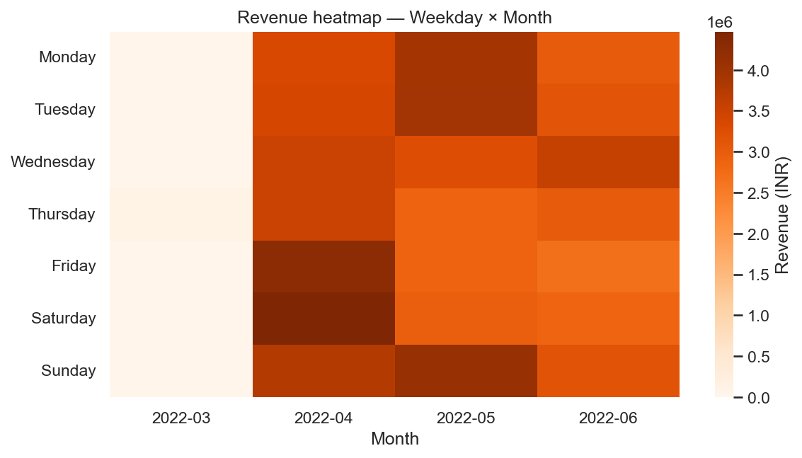
Three formal tests were run at α = 0.05.
| Test | Question | Statistic | p-value | Conclusion |
|---|---|---|---|---|
| Chi-square independence | Is cancellation independent of category? | χ² = 61.51 (df = 8) | 2.35 × 10⁻¹⁰ | Reject H₀ — cancellation depends on category |
| One-way ANOVA | Do mean order amounts differ across categories? | F = 10,873.3 | < 1 × 10⁻¹⁰ | Reject H₀ — category strongly affects amount |
| Mann-Whitney U | Do B2B and B2C amount distributions differ? | U = 60.66 M | 8 × 10⁻⁶ | Reject H₀ — B2B median (₹665) > B2C median (₹612) |
The Pearson and Spearman correlation matrices agree on direction; both indicate weak linear relationships between amount, quantity, and the cancellation flag (|r| < 0.25), which is what we would expect given the varied SKU mix.
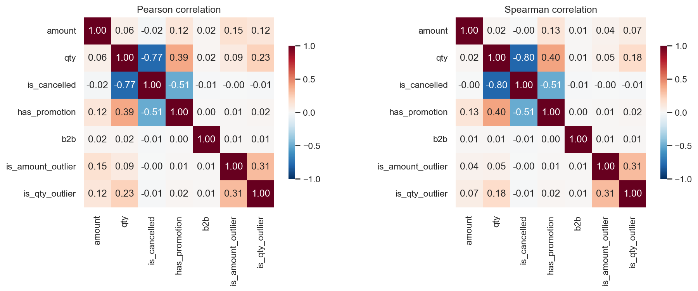
Every chart in the dashboard answers a specific question:
| Chart type | Question answered | Where used |
|---|---|---|
| Bar | Which categories / states drive revenue? | Overview, Sales, Geographic |
| Line | How is revenue trending over time? | Overview, Sales |
| Pie / donut | What is the order-status mix? | Overview |
| Heatmap | Which weekday × month combinations are strongest? Which variables correlate? | Sales |
| Scatter | How do amount and quantity relate? | Sales |
| Geographic bubble map | How is demand distributed across India? | Geographic |
| Time-series with forecast | What is the next-month revenue projection? | Forecasting |
The dashboard uses a coherent palette anchored by the brand-orange
#FF6B35 for primary callouts and a blue
#1F77B4 for secondary lines.
The Streamlit app exposes five pages, all driven by a shared sidebar with filters, dropdowns, city text search, date range input, and an outlier toggle. Every chart re-renders as filters change.
Three models were compared on a 30-day hold-out (last 30 of 91 days):
| Model | RMSE | MAE | MAPE |
|---|---|---|---|
| Naive 7-day MA | 111,844 | 91,393 | 13.6 % |
| Linear Regression (time features) | 375,720 | 362,992 | 48.3 % |
| Holt-Winters (additive, period=7) | 104,787 | 89,525 | 12.4 % |
Holt-Winters wins. It was refit on the full series and projects 30
days forward; results are written to data/forecast.csv for
the dashboard.
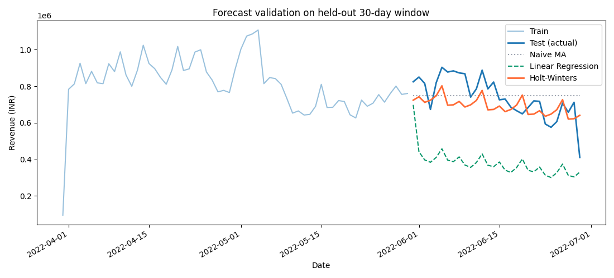
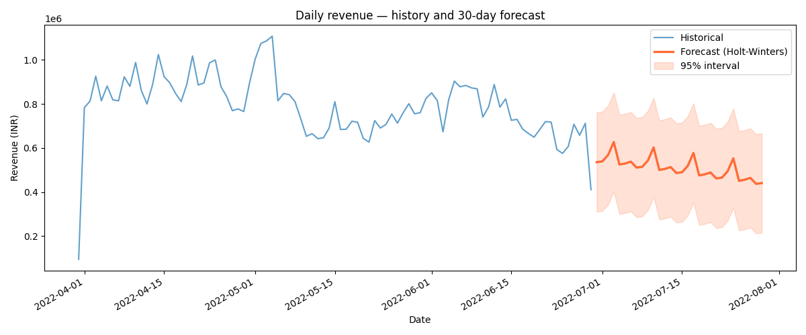
The Augmented Dickey-Fuller test on the daily series returned p < 0.001, indicating stationarity — Holt-Winters's additive structure is appropriate.
The AI Insights page combines two layers:
src/llm_insights.py. They run with zero external
dependencies and always render.ANTHROPIC_API_KEY
is present in .streamlit/secrets.toml, the page sends the
aggregated KPIs (no raw rows, no PII) to Claude with a system
prompt that constrains the model to a 3-paragraph executive summary
covering trends, risks, and recommendations.The graceful-fallback design means the dashboard remains fully usable without an API key — a deployment requirement on Streamlit Cloud free tier.
customer_id → classic RFM
segmentation is impossible. Order- level segmentation is used
instead.The project delivers a complete, defendable analytics solution — from notebook-grade cleaning and statistics through to an interactive dashboard and a working forecast — with every transformation justified in code.
Natural extensions:
claude-haiku-4-5-20251001).plan.txt, project.md,
and the three notebooks in notebooks/.# 1. Install dependencies
pip install -r requirements.txt
# 2. Generate cleaned CSV, figures, and forecast
python notebooks/01_cleaning.py
python notebooks/02_eda.py
python notebooks/03_forecasting.py
# Optional: build executable .ipynb notebooks
python notebooks/build_notebooks.py
# 3. Launch the dashboard
streamlit run app.py
# 4. (Optional) Enable AI Insights
cp .streamlit/secrets.toml.example .streamlit/secrets.toml
# edit secrets.toml and paste your ANTHROPIC_API_KEYSee DEPLOYMENT.md for Streamlit Cloud deployment
instructions.